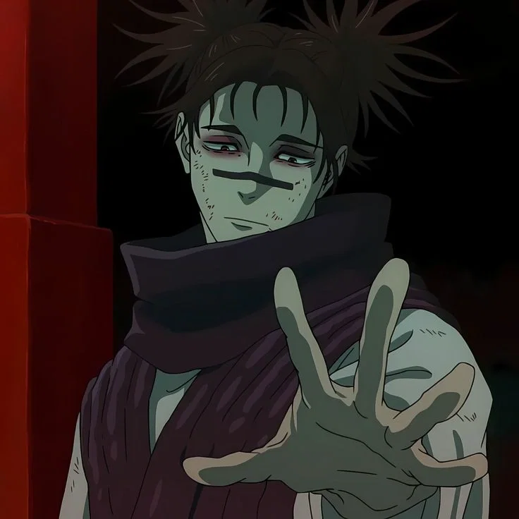
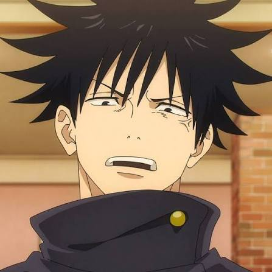

Choso

Gojo

Megumi

Sukuna
Choso
Choso es un espíritu maldito encarnado de grado especial del anime Jujutsu Kaisen, conocido por ser el mayor de los Úteros Malditos: Pinturas de la Muerte.
gojo
Es un hechicero de grado especial el rango más alto y es reconocido universalmente como el más fuerte del mundo, además de ser profesor en la Escuela Superior de Jujutsu de Tokio.Megumi
Es un estudiante de primer año en el Colegio Técnico de Magia Metropolitana de Tokio, compañero de equipo de Yuji Itadori y Nobara Kugisaki, bajo la tutela de Satoru Gojo